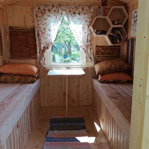
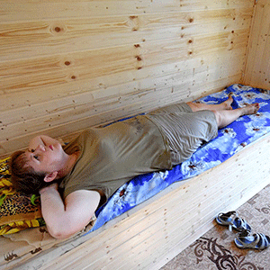
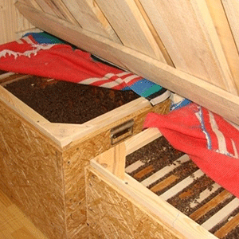

Натуральный мёд
Лучший подарок, по-моему, мёд. Это и ослик сразу поймёт! Даже немножечко, чайная ложечка – Это уже хорошо! Ну а тем более полный горшок!
 +375 29 775-57-45
+375 29 775-57-45
 +375 29 270-52-00
+375 29 270-52-00
 povetko55@yandex.ru
povetko55@yandex.ru


|


 |
Сон на пчелах подразумевает отдых на лежаке, под который подкладывают пчелиные дома с насекомыми. Это лечение помогает укрепить здоровье, нормализовать работу нервной системы. Чем полезен сон на пчелахБиорезонансная апитерапия – метод лечения, основанный на электромагнитных колебаниях который излучает организм человека. У здорового человека это физиологические или гармонические колебания, а при наличии заболеваний дисгармонические или патологические. Воздействии пчелосемей при засыпании на ульях направлено на модификацию отрицательные колебания человека в положительные. Сон на пчелах проявляет своё влияние на молекулярном уровне, действуя на клеточную жидкость. Пчелы издают звуки, которые человек не ощущает (биорезонанс). Полезные свойства ульетерапии:
Методы лечения с помощью сна на ульяхПроявление полезных свойств терапии происходит благодаря комплексу методов. Это определяет эффективность процедуры для борьбы с нарушениями в работе организма, отдыха, восстановления. Главные факторы:
|
| © Поветко Григорий Николаевич | Тел.: +375 1796 2-53-69 | Создание и поддержка сайта: |
|
222001, Республика Беларусь, Минская область
г. Крупки, ул. Черняховского, д. 1, кв. 12 |
Моб. тел.: +375 29 270-52-00 E-mail: povetko55@yandex.ru |
г. Минск, 2020 Влад Коваленко, тел.: +375 29 272-64-45 |